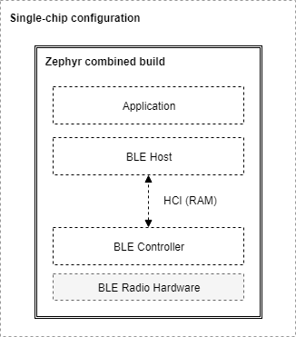
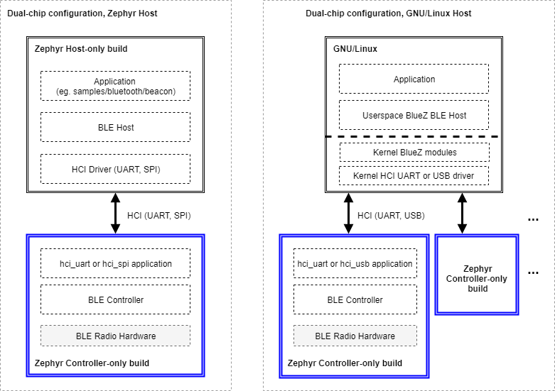

Stack Architecture
Overview
This page describes the software architecture of Zephyr’s Bluetooth protocol stack.
Note
Zephyr supports mainly Bluetooth Low Energy (LE), the low-power version of the Bluetooth specification. Zephyr also has limited support for portions of the BR/EDR Host.
Bluetooth LE Layers
There are 3 main layers that together constitute a full Bluetooth Low Energy protocol stack:
Host: This layer sits right below the application, and is comprised of multiple (non real-time) network and transport protocols enabling applications to communicate with peer devices in a standard and interoperable way.
Controller: The Controller implements the Link Layer (LE LL), the low-level, real-time protocol which provides, in conjunction with the Radio Hardware, standard-interoperable over-the-air communication. The LL schedules packet reception and transmission, guarantees the delivery of data, and handles all the LL control procedures.
Radio Hardware: Hardware implements the required analog and digital baseband functional blocks that permit the Link Layer firmware to send and receive in the 2.4GHz band of the spectrum.
Host Controller Interface
The Bluetooth Specification describes the format in which a Host must communicate with a Controller. This is called the Host Controller Interface (HCI) protocol. HCI can be implemented over a range of different physical transports like UART, SPI, or USB. This protocol defines the commands that a Host can send to a Controller and the events that it can expect in return, and also the format for user and protocol data that needs to go over the air. The HCI ensures that different Host and Controller implementations can communicate in a standard way making it possible to combine Hosts and Controllers from different vendors.
Configurations
The three separate layers of the protocol and the standardized interface make it possible to implement the Host and Controller on different platforms. The two following configurations are commonly used:
Single-chip configuration: In this configuration, a single microcontroller implements all three layers and the application itself. This can also be called a system-on-chip (SoC) implementation. In this case the Bluetooth Host and the Bluetooth Controller communicate directly through function calls and queues in RAM. The Bluetooth specification does not specify how HCI is implemented in this single-chip configuration and so how HCI commands, events, and data flows between the two can be implementation-specific. This configuration is well suited for those applications and designs that require a small footprint and the lowest possible power consumption, since everything runs on a single IC.
Dual-chip configuration: This configuration uses two separate ICs, one running the Application and the Host, and a second one with the Controller and the Radio Hardware. This is sometimes also called a connectivity-chip configuration. This configuration allows for a wider variety of combinations of Hosts when using the Zephyr OS as a Controller. Since HCI ensures interoperability among Host and Controller implementations, including of course Zephyr’s very own Bluetooth Host and Controller, users of the Zephyr Controller can choose to use whatever Host running on any platform they prefer. For example, the host can be the Linux Bluetooth Host stack (BlueZ) running on any processor capable of supporting Linux. The Host processor may of course also run Zephyr and the Zephyr OS Bluetooth Host. Conversely, combining an IC running the Zephyr Host with an external Controller that does not run Zephyr is also supported.
Build Types
The Zephyr software stack as an RTOS is highly configurable, and in particular, the Bluetooth subsystem can be configured in multiple ways during the build process to include only the features and layers that are required to reduce RAM and ROM footprint as well as power consumption. Here’s a short list of the different Bluetooth-enabled builds that can be produced from the Zephyr project codebase:
Controller-only build: When built as a Bluetooth Controller, Zephyr includes the Link Layer and a special application. This application is different depending on the physical transport chosen for HCI:
This application acts as a bridge between the UART, SPI or USB peripherals and the Controller subsystem, listening for HCI commands, sending application data and responding with events and received data. A build of this type sets the following Kconfig option values:
CONFIG_BT=y
The controller itself needs to be enabled as well, typically by making sure the corresponding device tree node is enabled.
Host-only build: A Zephyr OS Host build will contain the Application and the Bluetooth Host, along with an HCI driver (UART or SPI) to interface with an external Controller chip. A build of this type sets the following Kconfig option values:
CONFIG_BT=y
Additionally, if the platform supports also a local controller, it needs to be disabled, typically by disabling the corresponding device tree node. This is done together with enabling the device tree node for some other HCI driver and making sure that the
zephyr,bt-hcidevice tree chosen property points at it.All of the samples located in
samples/bluetoothexcept for the ones used for Controller-only builds can be built as Host-onlyCombined build: This includes the Application, the Host and the Controller, and it is used exclusively for single-chip (SoC) configurations. A build of this type sets the following Kconfig option values:
CONFIG_BT=y
The controller itself needs to be enabled as well, typically by making sure the corresponding device tree node is enabled.
All of the samples located in
samples/bluetoothexcept for the ones used for Controller-only builds can be built as Combined
The picture below shows the SoC or single-chip configuration when using a Zephyr combined build (a build that includes both a Bluetooth Host and a Controller in the same firmware image that is programmed onto the chip):

A Combined build on a Single-Chip configuration
When using connectivity or dual-chip configurations, several Host and Controller combinations are possible, some of which are depicted below:

Host-only and Controller-only builds on dual-chip configurations
When using a Zephyr Host (left side of image), two instances of Zephyr OS must be built with different configurations, yielding two separate images that must be programmed into each of the chips respectively. The Host build image contains the application, the Bluetooth Host and the selected HCI driver (UART or SPI), while the Controller build runs either the HCI UART, or the HCI SPI app to provide an interface to the Bluetooth Controller.
This configuration is not limited to using a Zephyr OS Host, as the right side of the image shows. One can indeed take one of the many existing GNU/Linux distributions, most of which include Linux’s own Bluetooth Host (BlueZ), to connect it via UART or USB to one or more instances of the Zephyr OS Controller build. BlueZ as a Host supports multiple Controllers simultaneously for applications that require more than one Bluetooth radio operating at the same time but sharing the same Host stack.
Source tree layout
The stack is split up as follows in the source tree:
- subsys/bluetooth/host
The host stack. This is where the HCI command and event handling as well as connection tracking happens. The implementation of the core protocols such as L2CAP, ATT, and SMP is also here.
- subsys/bluetooth/controller
Bluetooth LE Controller implementation. Implements the controller-side of HCI, the Link Layer as well as access to the radio transceiver.
- include/zephyr/bluetooth/
Public API header files. These are the header files applications need to include in order to use Bluetooth functionality.
- drivers/bluetooth/
HCI transport drivers. Every HCI transport needs its own driver. For example, the two common types of UART transport protocols (3-Wire and 5-Wire) have their own drivers.
- samples/bluetooth/
Sample Bluetooth code. This is a good reference to get started with Bluetooth application development.
- tests/bluetooth/
Test applications. These applications are used to verify the functionality of the Bluetooth stack, but are not necessary the best source for sample code (see samples/bluetooth instead).
- doc/connectivity/bluetooth/
Extra documentation, such as PICS documents.